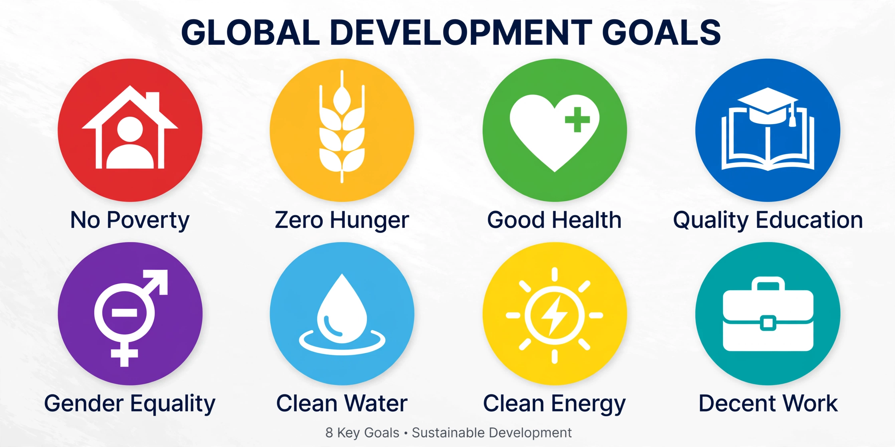

| Millennium Development Goals | |
|---|---|
 | |
| Established | 2000 (UN Millennium Declaration) |
| Deadline | 2015 |
| Goals | 8 goals, 21 targets, 60 indicators |
| Succeeded by | Sustainable Development Goals (2015) |
The Millennium Development Goals (MDGs) were eight international development goals established following the Millennium Summit of the United Nations in 2000, following the adoption of the United Nations Millennium Declaration. All 191 UN member states of the time, and at least 22 international organisations, committed to help achieve the goals by 2015.
Each goal had specific targets and indicators; for example, Goal 1 aimed to halve, between 1990 and 2015, the proportion of people living on less than $1.25 a day.
By 2015, the extreme poverty target had been met globally five years ahead of schedule, largely owing to progress in China; the proportion of people living in extreme poverty fell from 36% in 1990 to about 10% in 2015. Targets on safe drinking water and reducing hunger were nearly met, but progress was uneven: maternal and child mortality fell substantially yet short of their targets, and sub-Saharan Africa and fragile states lagged. Critics noted the goals' top-down origins, neglect of inequality within countries, and weak treatment of governance and human rights.
The MDGs were succeeded in September 2015 by the 17 Sustainable Development Goals (SDGs) of the 2030 Agenda, which broadened the framework to include environmental and economic dimensions and universal application to all countries.
See also: Sustainable Development Goals; Millennium Declaration; International development.